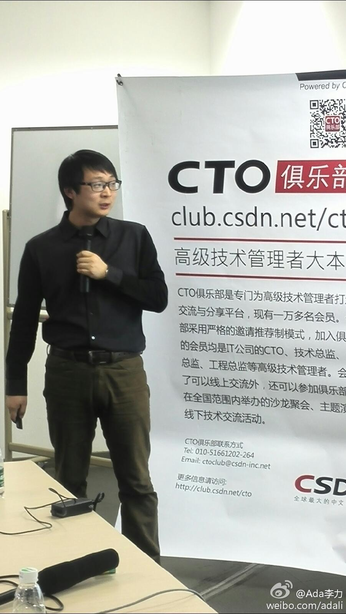

//@innovate511:做算法提升，总会有效果的，只不过价值到底多大，领导认了就行，没必要深究。另外大数据要颠覆性地提升用户的体验，目前条件不成熟，因为这必须得产品决策层来定。做数据挖掘的人，只能做“修修补补”的事，这也是最大的悲哀。所以我索性出来自己干了，想怎么颠覆就怎么颠覆@Ada李力:当当网算法研究员 鞠奇 是去年四月份毕业的博士生。加盟当当后不久，就通过提高书评的显示质量，而使书籍销售提高了一个亿，从而获得了总裁奖。技术是生产力的绝佳例子。他分享的话题是《营销技术经验点滴谈》@CTO俱乐部 